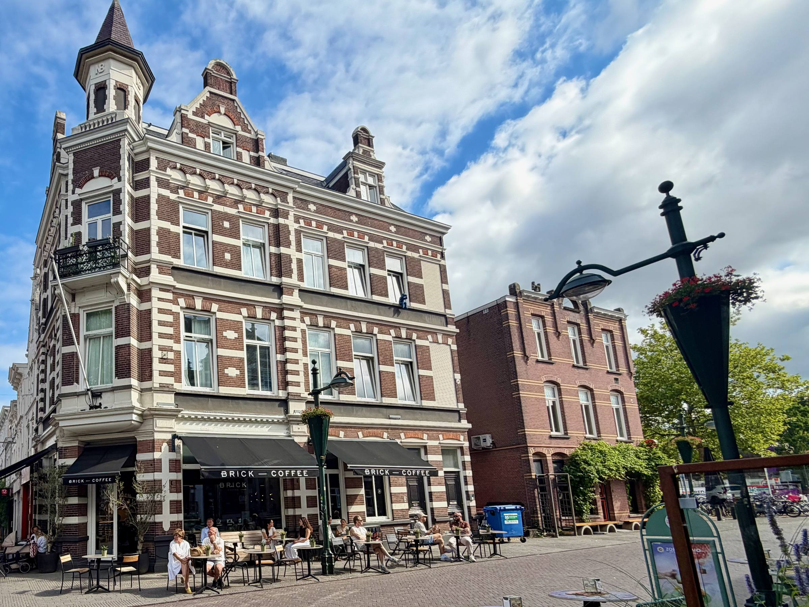
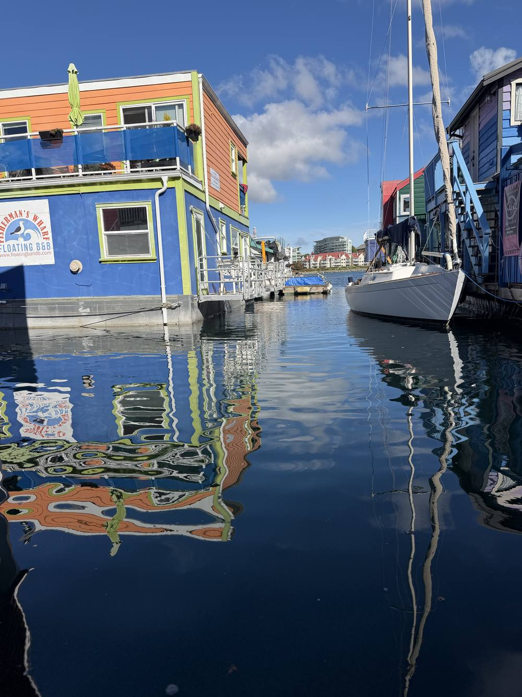
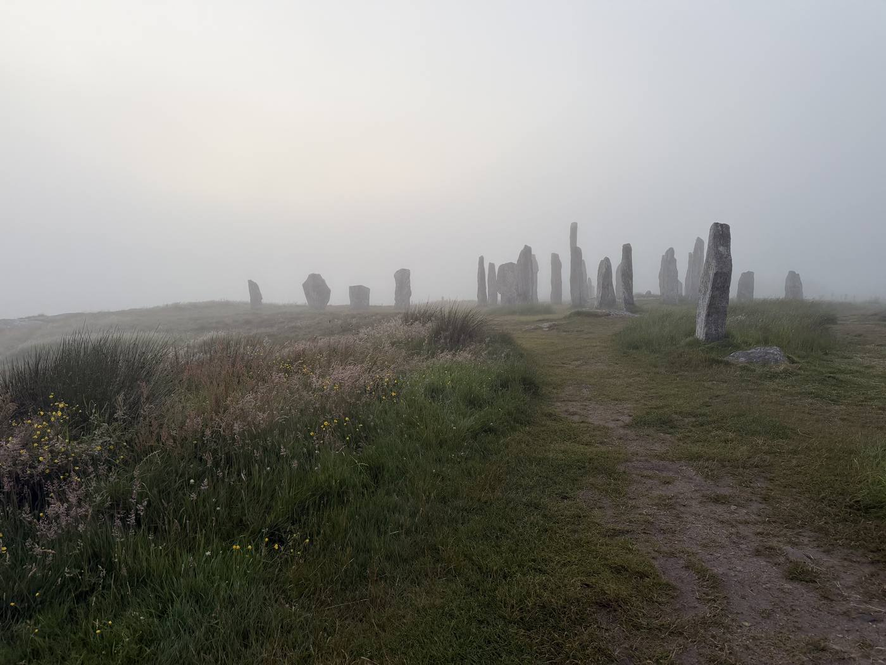
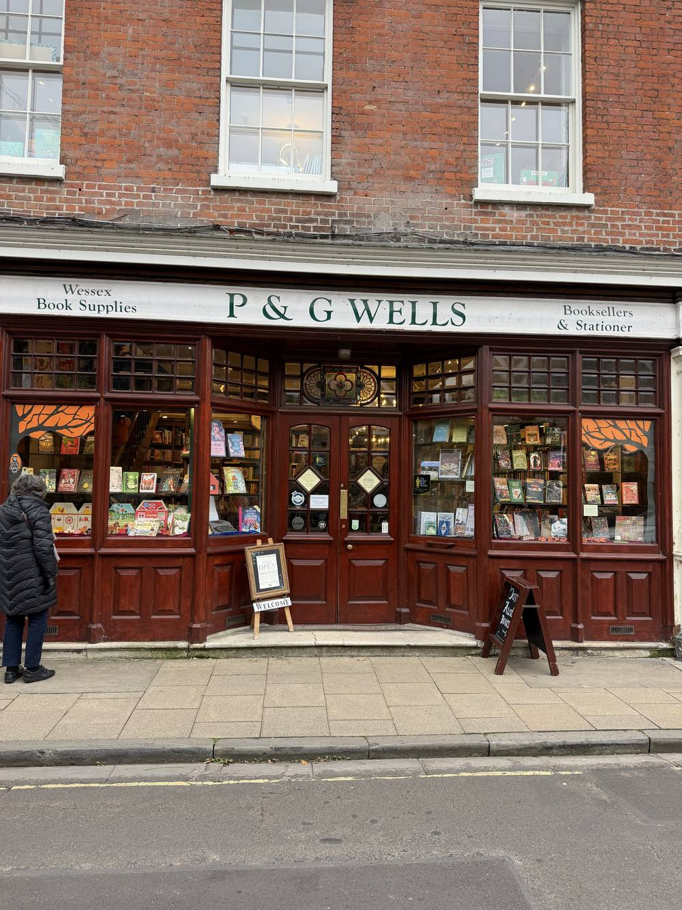
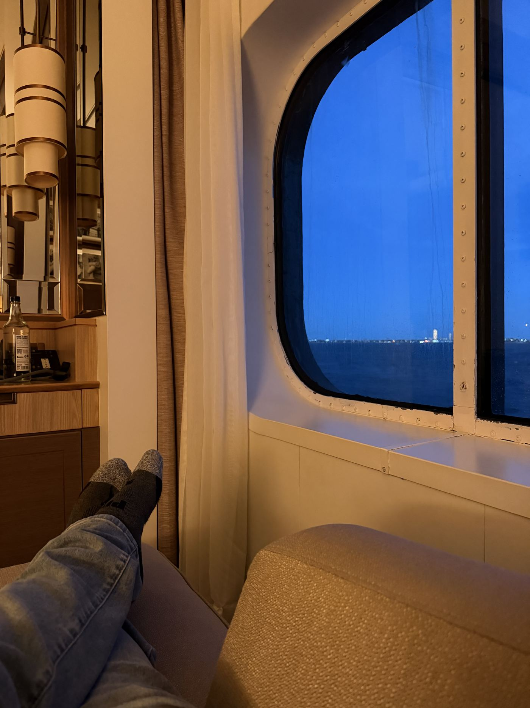
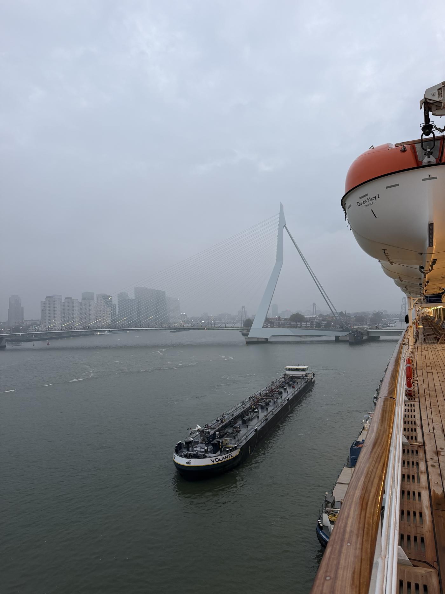

I help people plan trips that feel like theirs.
I'm Sean, a travel advisor in Los Angeles. I plan trips around what you want them to do for you: rest, a big celebration, time with people you love, or the trip you've been putting off for years.
It starts with you, not a brochure
Most trip planning starts with a destination. I start with you: what you want from the trip, what you'd like to come home with, and how you like to spend a day when nobody's in charge of it. I was a coach for years, and it turns out the questions that help people sort out their lives work pretty well on vacations too.
Then I do the legwork. I don't know every ship and hotel by heart, but I know what to ask, and I make the calls so you don't have to. And when something changes halfway through, you have one person to call who already knows the plan. There's no planning fee. Here's how I'm paid.
What I plan
Trips of a lifetime, and longer journeys
The big anniversary trip, the month in one place, the route through four countries by ship, train and car. If it has a lot of moving parts, I keep track of them so you don't have to.
The right place, in the right season
I have a soft spot for cooler places and quieter seasons: the Scottish islands, the Netherlands in autumn, British Columbia when the rain comes in. The same thinking works for sun. Italy in October is a very different trip from Italy in August.
Luxury, river and small-ship voyages
Ocean crossings, river cruises, expedition ships and the smaller luxury lines. I'll help you pick the ship, the cabin and the itinerary that suit how you like to spend a day.
Family, milestone and group trips
Big birthdays, reunions and trips with the grandkids, planned so the oldest and the youngest travelers both have a good time.




Planned around you
The best trip is the one that fits how you travel now, so you can keep doing it for a long time. My own best days involve a window, a pot of tea and nowhere to be until lunch. Yours might be a new port every morning. Both are good trips.
Whatever you bring along is part of the plan from the first conversation: a knee that doesn't love stairs, a wheelchair, a hearing aid, low vision, a need for a quiet afternoon. On every trip, I check things like:
- How far your room is from the elevator and the dining room
- Whether the shower has a step
- Whether a port is docked or reached by tender boat
- How much walking a day really involves
How it starts
Tell me about your trip
A short form, or just a note. I'll get back to you within a day.
We talk
Phone, video or text, whichever you prefer. I'll ask a lot of questions, including how you'd like to feel when you get home.
I build it
You get a plan to react to. Once you decide, I handle the bookings and the details, and I'm around before, during and after.
From the journal
First-hand notes on ships and places. Everything here is somewhere I've been.

Queen Mary 2
Ocean Liner vs. Cruise Ship: What a Crossing Gives You That a Cruise Can't
Why I'd spend a week getting to Europe, and who a crossing suits.

Rotterdam
Arrive Before You Arrive: A Night at Rotterdam's Hotel New York
Why the hours on either side of a cruise matter as much as the cruise.
Not ready to plan yet?
Time Well Spent is my monthly letter: trips worth taking, and when to take them. Plus where I've been and what I noticed.